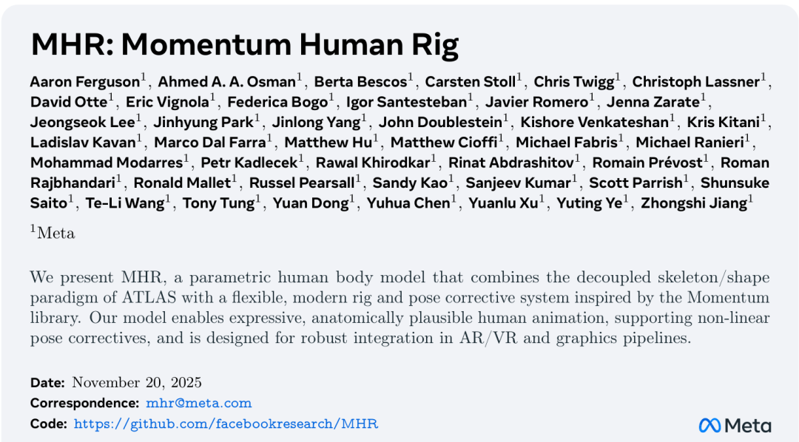
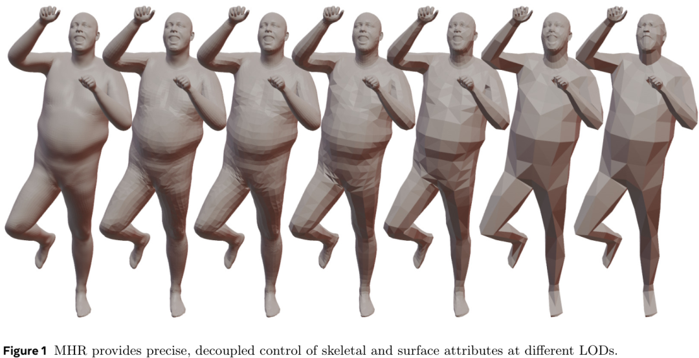
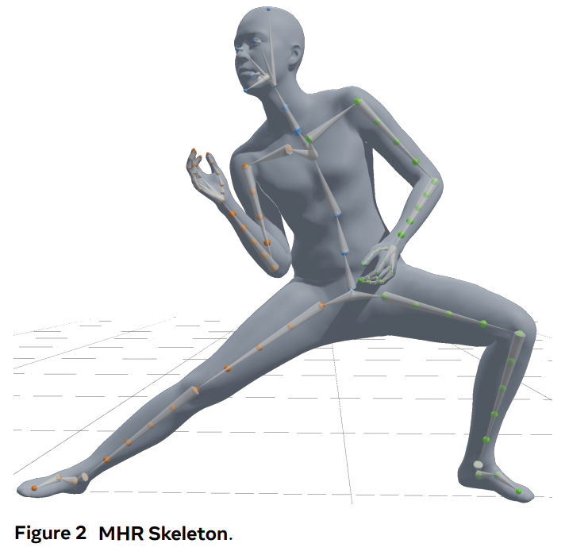
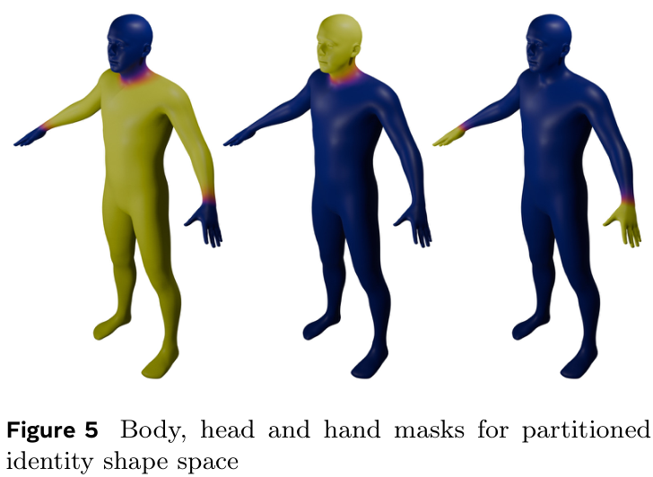
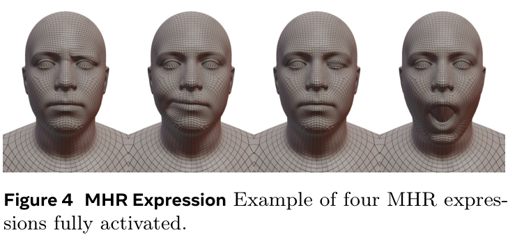
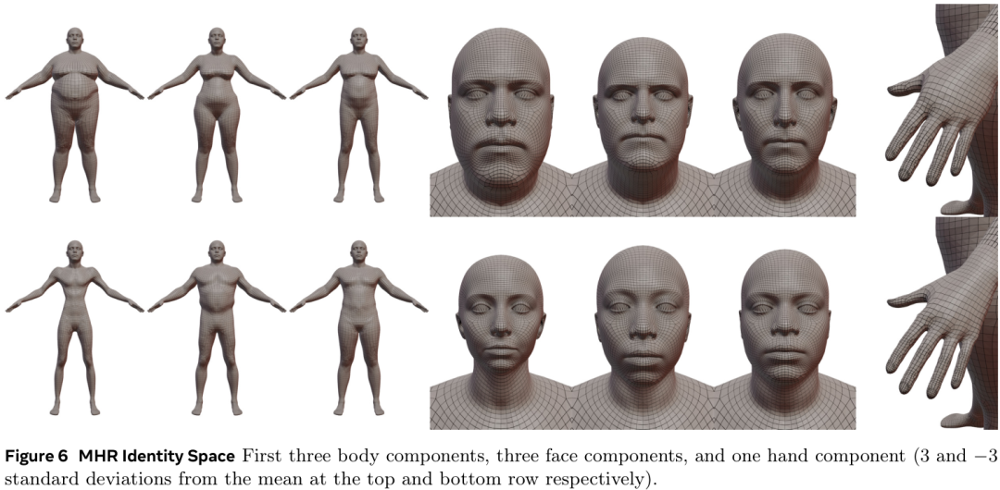
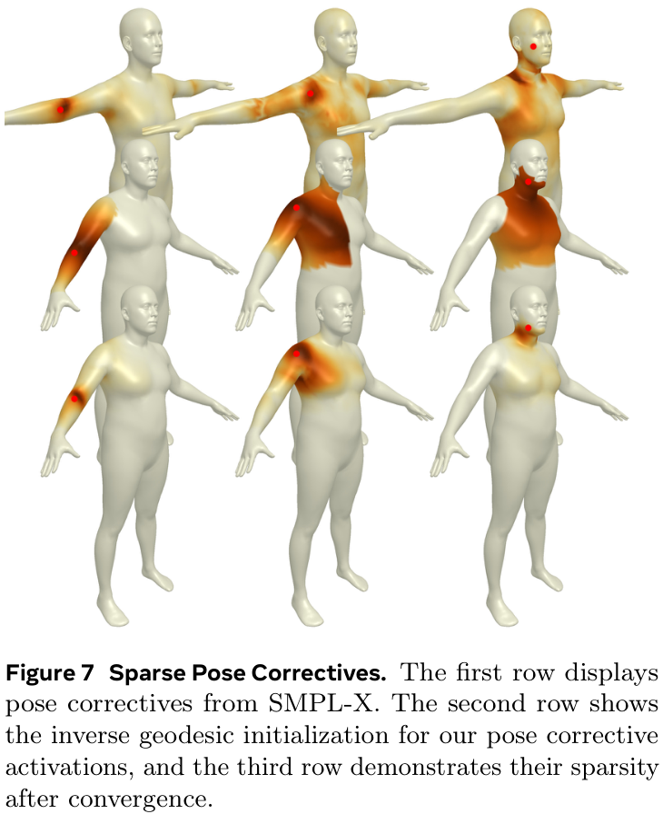
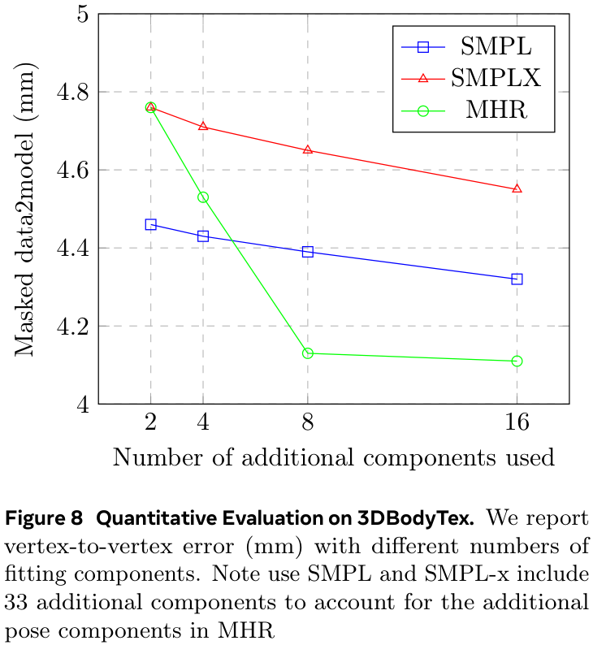
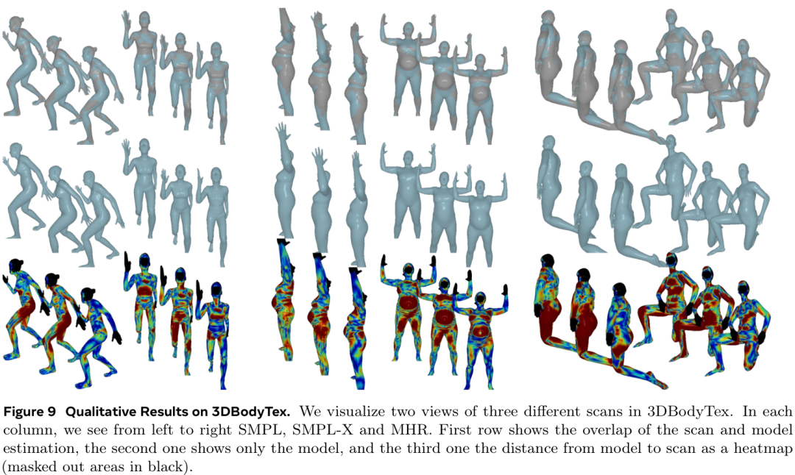

SMPL 自 2015 年提出后一直是参数化人体模型的事实标准，但存在骨架/形状耦合、表情不兼容艺术家流程、pose corrective 稠密耦合等根本局限。MHR 由 Meta Reality Labs 47 位作者联合打造，基于 ATLAS 的解耦骨架/形状范式 + Momentum 蒙皮库的现代 rig，专为 AR/VR 与图形管线设计，是 SMPL 的正式升级版。
ATLAS（Meta 2025）已解决部分问题：解耦骨架/形状、77 关节、稀疏非线性 pose corrective、60 万高分辨率扫描训练。但表情用 FLAME（不兼容艺术家）+ 骨架未为 corrective 优化。MHR 在 ATLAS 基础上补齐这两块。
MHR 的形式化定义：
X(β, θ) = M(X̃(βˢ, βᶠ, θ), Bᵏ(βᵏ), θ, ω) X̃(βˢ, βᶠ, θ) = X̄ + Bˢ(βˢ, S) + Bᶠ(βᶠ, F) + Bᵖ(θ, P) 其中: X = 输出顶点 (3V 维) M = LBS 蒙皮函数 (权重 ω) X̄ = 中性模板 Bˢ = 身份 blendshape (系数 βˢ, 基 S) Bᶠ = 表情 blendshape (系数 βᶠ, 基 F) Bᵖ = pose corrective (pose θ, 参数 P) βᵏ = 骨架变换参数 (68 维: 肢体长度等) θ = pose 参数 (204 维: 136 pose + 68 skel)
T_w = T_p × T_off × T_t × T_prerot × T_rot × T_s204 个模型参数通过线性变换 T_p 映射到 127×7=889 个关节参数。这层映射带来三大能力：
204 参数拆分：136 pose 参数（每帧变）+ 68 骨架变换参数（每人固定，定义肢体长度等）。
数据驱动表情（FLAME）优势：来自千张扫描，理论上能建模细微表情；正交空间紧凑；自动建模面部相关性。但残余 pose 变化 + 不兼容艺术家是致命问题。MHR 选 FACs 是工程务实选择。
身份空间控制固定骨架下的身体形状（不像 SMPL 会改肢体长度/身高）。分三个不相交的子空间：
| 子空间 | 训练数据 | 成分数 | 说明 |
|---|---|---|---|
| Body | 7110 scans (从 13664 过滤) | 20 | 体型/年龄/种族多样性 |
| Head (skull) | 2138 subjects (扩展自 Codec Avatar) | 20 | 用 Pixel Codec Avatar 拟合中性几何 |
| Hands | 3000 subjects | 5 | 手部专用扫描 |
这是 MHR 相比 SMPL 的核心改进之一。pose corrective Bᵖ(θ, P) 接收 6D 关节角，输出顶点偏移。设计哲学：稀疏 + 非线性。
(1 - d(i,j)) · 𝟙[i ∈ seg(j)]images/mhr-zhihu/。
大家好！今天想和大家聊一篇非常有趣的新论文，它来自Meta，题为《MHR: Momentum Human Rig 》。这篇论文介绍了一种全新的参数化人体模型—— MHR (Momentum Human Rig) 。对于从事AR/VR、游戏开发或是数字人研究的朋友们来说，这绝对是一个值得关注的进展。简单来说，MHR模型旨在创建更富有表现力、 解剖学 上更合理的人体动画，它巧妙地结合了两种 现有技术 的优点，并引入了创新性的改进，让数字人的动作和形态都达到了一个新的高度。
在深入了解MHR之前，我们先来看看这篇重磅论文的基本信息：
在 计算机图形学 领域，参数化人体模型扮演着核心角色。像我们熟知的 SMPL 、SMPL-X等模型，它们能用一组紧凑的参数（比如体型和姿态）来生成一个完整的三维人体网格。这项技术是虚拟试衣、 动作捕捉 和虚拟形象创建等应用的基石。
然而，经典的模型也存在一些固有的局限性。例如，在SMPL这类模型中，人体的骨骼关节位置是通过表面网格顶点加权计算得出的。这种设计导致了骨骼和身体外形（ 软组织 ）的“纠缠”，使得我们很难独立地去调整骨骼长度（比如让一个角色变高，但不变胖）或精确地塑造体型。这对于追求细节的 艺术家 和开发者来说，无疑是一个痛点。
为了解决这个问题， ATLAS 模型率先提出了解耦骨骼与外形的思想，允许对骨骼和表面进行 独立控制 。MHR正是在这一思想的基础上，进一步融合了 Momentum库 的灵活性和现代化的绑定系统，旨在打造一个表现力更强、更符合解剖学原理的全新模型。

MHR模型的 设计哲学 是“解耦”与“精控”。它将人体分为几个可以独立控制的部分，并对姿态引起的变化进行了更精细的建模。其核心可以概括为以下几点：
MHR的第一个亮点，就是它彻底分离了 骨骼结构 （Skeletal Structure）、身份体型（Identity Shape）和姿态（Pose）。



下图展示了MHR身份空间中身体、面部和手部的前几个主成分变化效果，可以看出其对局部形态的强大控制力。

当人体做出大幅度动作时（比如弯曲手肘或膝盖），皮肤和肌肉会产生复杂的变形，这被称为“软组织变形”。传统的线性混合蒙皮（LBS）技术很难完美模拟这种效果，经常会导致“糖纸包裹”等不自然现象。因此，需要额外的“姿态校正”来修正。
SMPL-X等模型虽然有姿态校正，但其校正量是全局性的，一个关节的运动可能会影响到全身的顶点，这在物理上是不准确的。
MHR在这里提出了一个非常巧妙的方案： 稀疏非线性姿态校正 (Sparse, Non-Linear Pose Correctives) 。它将校正过程分解为两步：
如下图所示，SMPL-X的姿态校正（第一行）影响范围很广，而MHR的校正（第三行）在训练后变得非常稀疏和局部化，更符合真实的肌肉运动原理。

这种设计结合了 非线性模型 的表现力和 稀疏模型 的局部性与效率，是MHR在技术上的一个重大突破。
说了这么多技术细节，MHR的实际表现究竟怎么样呢？论文在3DBodyTex这个公开数据集上，将MHR与SMPL和SMPL-X进行了详细的比较。
在模型拟合3D扫描数据的任务上，研究人员评估了模型表面与真实扫描数据点之间的平均距离（即顶点到表面的误差）。结果显示，MHR在不同数量的拟合参数下，其 拟合误差 均显著低于SMPL和SMPL-X 。这意味着MHR能够用更少的参数更准确地表达真实的人体形状。

定性结果更加直观。从下图的比较中我们可以看到，无论是从模型与扫描的重叠度，还是从误差热力图来看，MHR（最右列）的拟合效果都远超前两者。特别是在关节处，如肩膀、肘部和膝盖，SMPL和SMPL-X的拟合偏差较大，而MHR则能非常贴合地重建出身体轮廓，尤其是在一些极端姿态下，优势更为明显。

总的来说，MHR通过将骨骼与体型解耦、引入分区的身份空间以及设计巧妙的稀疏非线性姿态校正系统，成功地创建了一个在表现力、准确性和艺术家友好性方面都超越以往工作的参数化 人体模型 。
这项工作不仅为AR/VR中的虚拟化身、电影和游戏中的角色动画提供了更强大的工具，也为 计算机视觉 领域中基于模型的3D人体姿态和形状估计等研究铺平了道路。虽然模型还有一些待完善之处，比如集成眼球和 口腔系统 ，但MHR无疑为 数字人技术 的未来指明了一个清晰而令人兴奋的方向。
大家对MHR这个新模型有什么看法？你觉得它最可能在哪些领域大放异彩？欢迎在评论区一起交流讨论！
在 3DBodyTex（100 男 + 100 女，每人 2 个姿态）上优化 body shape + pose 参数，最小化 scan→model 点到面距离 + 关键点距离，Adam 2500 迭代 lr=0.01。
| 附加成分数 | SMPL (mm) | SMPL-X (mm) | MHR (mm) |
|---|---|---|---|
| 2 | ~4.8 | ~4.6 | ~4.4 |
| 4 | ~4.6 | ~4.4 | ~4.1 |
| 8 | ~4.4 | ~4.2 | ~3.9 |
| 16 | ~4.3 | ~4.1 | ~3.8 |
| 44 | ~4.2 | ~4.0 | ~3.7 |
MHR 在所有成分数下拟合误差均低于 SMPL/SMPL-X（注：SMPL/SMPL-X 额外加 3 个成分以对齐 MHR 的额外 pose 成分）。定性上 MHR 在肘/膝等关节 extremities 和肩膀处贴合更好。
| 维度 | SMPL | SMPL-X | ATLAS | MHR |
|---|---|---|---|---|
| 骨架来源 | 从 mesh 回归 | 从 mesh 回归 | 解耦 | 解耦 |
| 关节数 | 24 | ~55 | 77 | 127 |
| pose corrective | 稠密线性 | 稠密线性 | 稀疏非线性 | 稀疏非线性 |
| 表情模型 | 无 | FLAME (数据驱动) | FLAME | FACs (艺术家雕塑) |
| 身份空间 | 耦合骨架 | 耦合骨架 | 解耦 | 解耦 + 分区(body/head/hand) |
| LoD | 1 | 1 | 多 | 6 (971~73639 顶点) |
| 训练扫描 | ~数千 | ~数千 | 600k | 7110 body + 2138 head + 3000 hand |
| 许可 | 研究用 | 研究用 | 受限 | 工业友好 (免费实验) |
| 工具链 | Python | Python | — | Momentum (C++/Python, FBX/GLTF) |
| 角色 | 论文 | 关系 |
|---|---|---|
| 直接使用者 | F3G-Avatar (2604.09835) | 首个把 MHR 集成到 3DGS 全身数字人的工作 |
| HMR 工具 | SAM 3D Body (2602.15989) | 单图预测 MHR 参数的模型（MHR 界的 HMR） |
| 可替代模型 | GaussianAvatars (2312.02069) | 用 FLAME；MHR 可替代 FLAME 作为底层参数化模型 |
| 全身调研 | 3D 高斯人物与人脸重建调研 | MHR 是 SMPL 升级版的代表 |
| 同事方案 | 同事方案分析 | 同事用 MHR 替代 SMPL，MHR 是"换模型"依据 |